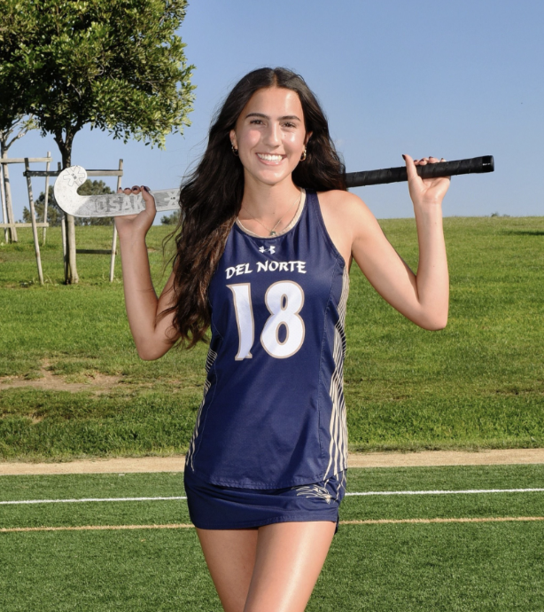
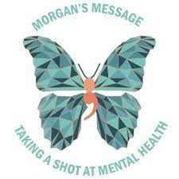
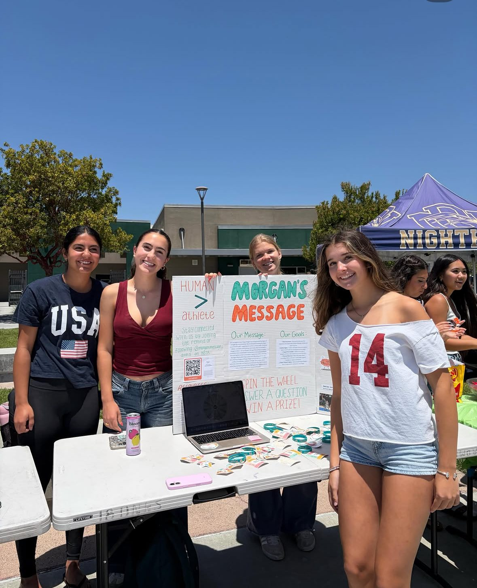

Read
Reflections about student mental health, identity, family change, athletics, recovery, and pressure.
Explore storiesYouth-led storytelling and support
A student-led home for honest stories about body image, pressure, sports, recovery, family, and the quiet weight many young people carry.
Broad Shoulders Initiative shares personal reflections and trusted starting points for support so students feel less alone and more willing to reach toward someone safe.
Reflections about student mental health, identity, family change, athletics, recovery, and pressure.
Explore storiesSubmit a story anonymously or by name, at whatever length feels right and safe.
Start a submissionFind resources and collaboration paths for schools, counselors, clubs, nonprofits, and teams.
See partnershipsExecutive Leadership
Broad Shoulders is led by student leaders committed to storytelling, mental health advocacy, and helping students feel less alone in the experiences they often carry quietly.



Origin Story
Broad Shoulders began from a story Jonathan carried quietly: body image, injury recovery, athletic identity, pressure, and the powerful relief of realizing you are not alone.
Read Jonathan's Story →Story Archive
The archive is the heart of Broad Shoulders: personal writing about the things students often feel they have to handle alone.
Resource Spotlight
Broad Shoulders continues to spotlight Morgan's Message resources for athletes navigating pressure, injury, identity, and mental health.

Community in Action
At Del Norte High School on May 21, 2026, Morgan's Message DNHS joined Bring Change 2 Mind, CARE Club, LIFE Advisory, Psychology Club, Peer Counseling, and Love on a Leash for a Mental Wellness Fair that shared resources, coping strategies, wellness tips, club information, and community support.
Students learned about wellness clubs and mental health resources while the event created a welcoming space for conversations about mental wellness.
Read More About the Fair →
Morgan's Message DNHS ambassadors share student-athlete mental health resources.
Submit a Story
Send a short reflection, a fuller essay, a poem, or a note of support. Share only what feels safe.
Share Your Story